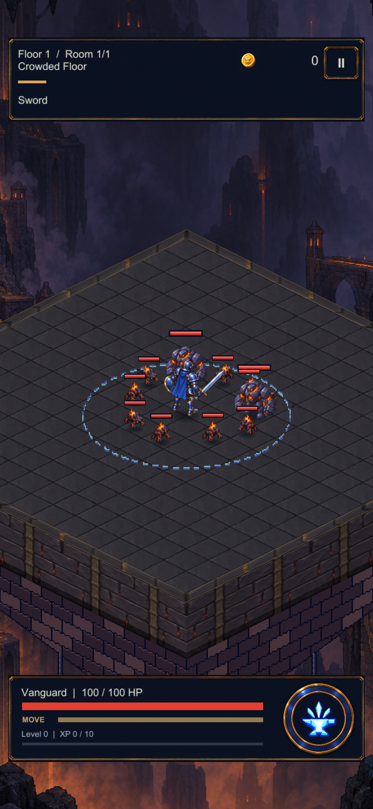

Kesikli piksel halkasını, zemine daha temiz oturan ince bir konturla karşılaştırıyoruz. Seçenekler aynı Unity sahnesinde geçici olarak örneklendi. Oyuna henüz aktarılmadı.

Görüntüler canlı oynanış değildir. Soğuma durumu sabit alfa ile görsel olarak örneklenmiştir. Hasar, menzil ve süreler değişmedi. Kapsam ve teknik kayıt